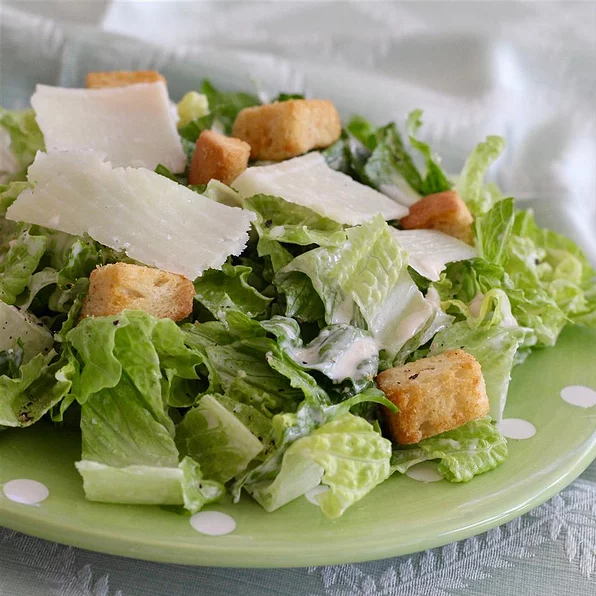

Caesar Salad

Description
This recipe follows the same theme as the homemad pepperoni pizza: Delicious AND simple to make! What could be better?!?
This Caesar salad is restaurant quality and leagues better than anything premade from the grocery store! Steps just involve
mixing the dressing ingredients, tossing it with lettuce in a bowl, and throwing it in the refrigerator for an hour!! Wow!!!!!!
Ingredients
- 2 anchovy fillets
- 2 cloves garlic, chopped, or to desired taste
- 1 cup mayonnaise
- 1/3 cup gratedParmesan cheese
- 1/4 cup half-and-half
- 2 tablespoons fresh lemon juice
- 1 tablespoon Dijon mustard
- 2 teaspoons Worcestershire sauce
- 1 or 2 salad lettuce mix
Steps
- Throw anchovy fillets & garlic in a food processor;pulse until mixture is of paste consistency
- Now add mayo, parm cheese, half-and-half, lemon juice, dijon mustard, and Worcestershire sauce
to anchovy mix and process until dressing is creamy
- Place salad mix and dressing in a bowl and toss until dressing is evenly dressed on salad
- Refrigerate for 1 hour or more and serve!
- EAT IT NOMNOMNOMNOM